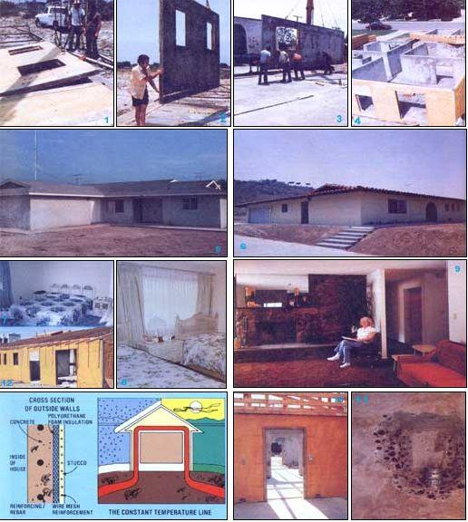

There are an awful lot of "instant expert" promoters of "energy efficient" houses around today. And, almost to a man, they seem to be boasting about how the homes they've built-with little, teenie, double-glazed windows and "extra" insulation stuffed into the walls-can save 10 to 20 percent of an "ordinary" (the kind they built last year) structure's use of energy.
Well, a savings of 10 to 20 percent is better than a poke with a sharp stick. But it's nothing compared to the whopping 60 percent and larger savings (of both winter heating and summer cooling power demands) that a mild-mannered contractor from Colton, California is now ringing up.
Believe it or not, that contractor-Jesse J. Savell, Jr.has originated a patented system of construction that makes a building "want" to maintain a comfortable interior temperature of 68° to 78°F ... automatically ... with hardly any supplemental heating or cooling at all ... without unduly large or small windows or any other "sore thumb gimmicks" tacked onto its design ... without even being underground (like the Andy Davis house featured in MOTHER NO. 46).
In short, a Savell System dwelling accomplishes all its magic energy savings-and a great deal more-without looking "strange" or in any way different from the kind of housing that we've all grown used to. And the cost of one of these "wonder structures"-complete on a city lot, in the suburbs, or out on your favorite patch of country land-is directly competitive with today's "standard" (and rather sleazy) wooden-framed dwellings!
The secret of Jesse Savell's energy saving homes closely parallels the old/new '.design philosophy of architect David 'Wright (see The Plowboy Interview in MOTHER NO. 47). Wright, as you'll probably recall, has learned to construct houses of native materials so attuned to their micro-climates and so cleverly thought-out ... that they're frequently 90 percent or more self-heating and self cooling on a year-round basis. And one of David Wright's most important design rules-of-thumb is: "Build your home like a 'thermos bottle. Put its insulation on the outside, just under a weather skin-and 'keep all its heavy masses inside. When you isolate them from the summer's heat 'and the winter's cold that way, they become gigantic thermal flywheels that help you coast right through the seasonal and daily temperature changes that buffet the exterior of your building."
Jesse Savell entirely agrees with that idea. However, where David Wright is currently more concerned with applying the principle to houses constructed of native materials (adobe, stone, and timber) and precisely custom-tailored to a particular micro-climate ... Jesse Savell prefers to build mostly with concrete and to deal in less specialized, absolutely "conventional looking" designs. Or, to put it another way: Mr. Savell is sorta sneaky. He's working with the same extremely simple but highly advanced thermodynamic concept that Wright has mastered ... but he's disguising it so well that most folks aren't even aware that his homes are actually darned revolutionary structures!
Interestingly enough, Savell wasn't even thinking about the thermal properties of his buildings when he first developed his new construction technique. What he was really trying to do was come up with a simple, low-cost system of precasting concrete walls and then putting them together in such a way that neither the sections of wall themselves, the joints between them, nor the reinforced stucco or any other decorative coating applied to their surfaces would crack.
Now that, alone, is a pretty tall order (as you know if you've ever lived in a house with concrete walls or a stuccoed facade). But darned if Jesse didn't pull it off well enough to be awarded U.S. Patent No. 3,942,294 for his method of pouring and then joining together "sandwich" wall panels.
"I was only thinking about eye appeal when I started this project," Savell remembers, "and it took me five years of fiddling around and experimenting before I finally solved that cracking problem. I did it by coming up with 'sandwich' wall panels made of several inches of concrete on the inside, a good stucco finish on the outside, and a layer of polyurethane in between. In the beginning, of course, the polyurethane was there just as a'stress relief cushion' that absorbed the difference in the rate of expansion and contraction between the concrete and the stucco."
Everyone who visited a prototype house built of Jesse's new sandwich panels in 1973, however, came away baffled by a surprising and completely unexpected fact: In the middle of a hot southern California summer-and without any air conditioning at all-the new home was staying cooler inside than some of the air conditioned neighboring stick-frame houses. As a matter of fact, it was staying cooler inside than steady-state engineering calculations said it should be! Where in the heck was all that mid-summer heat disappearing to?
Gradually, with the help of a university physics professor and several days of calculations, Savell figured out what was happening: The other buildings in the neighborhood-built in the conventional manner, with insulation applied inside the main mass of their structural walls-were reaching a steady state with the surrounding hot atmosphere. That is, the temperature of the mass of the buildings had risen to the uncomfortably warm temperature of the air around the houses and that warmed mass was then radiating a great deal of heat energy right through the insulation on its inside surfaces. This warmed the air inside the structures to an uncomfortable level. The mass of the buildings, in other words, was doing everything it could to absorb outside heat and radiate it into the structures' interiors ... and it took a lot of air conditioning to neutralize this natural, heat pump-like action.
Jesse's house, on the other hand, had been built with its insulation on the outside of some rather massive concrete walls and floors ... walls and floors that rested on a heavy foundation set deep into the ground. Instead of tending to reach a steady state with the hot atmosphere which surrounded the insulation protecting its walls and roof, then ... the heavy concrete mass of the Savell home tended to reach a steady state with the earth beneath it. And we all know that the temperature of the earth a few feet below the surface stays a more-or-less constant 56* to 58*F year round in most parts of the world.
"We usually say it," notes Jesse Savell, "something like this: The earth has a 'constant temperature line' several feet beneath the surface where all the summer heat and all the winter cold of the environment over that particular patch of ground is balanced out by the sheer mass of the soil and rock itself. And that's just where that constant temperature line has to stay ... it can't rise up any nearer the surface by itself.
"But then we come along and change the thermal balance of the piece of land by putting a big mass of concrete on it. We also make sure that the mass of concrete is firmly anchored to the earth by a heavy concrete foundation (and all that concrete, of course, is a good conductor of heat energy) ... but we isolate the whole massive structure from the atmospheric environment with a very efficient layer of insulation. As a result, the constant temperature line that is ordinarily buried two or three yards down in the ground can now 'wick up' into the little man-made cave we've just constructed. The constant temperature line can come up inside that house just as if the house was a part of the earth itself."
"Wicking" a constant 58° into your house when the outside air temperature is 90° or 100°F during the summer is obviously a good idea. But what about the winter? Won't that tend to make your home awfully hard to heat during a January blizzard?
Not at all ... as Andy Davis recently pointed out (see The Plowboy Interview in MOTHER NO. 46) while explaining that his family had just lived comfortably through a cold Illinois winter in an underground house ... while burning only $1.29 worth of fuel:
"When you insulate a house from the atmospheric temperature swings this way but leave it exposed to the earth's temperature eight or more feet beneath the surface, you've automatically built in natural summer air conditioning. And you've automatically built in a certain amount of winter heating too.
"Think of it this way. When the outside air temperature is 10 degrees below zero and a family living in a conventional house wants to keep their home at a comfortable 70° ... why they have to burn enough fuel to maintain the full 80° temperature difference. And that's a lot of fuel.
"But under the same conditions-when the outside air temperature is 10 degrees below zero-the 'outside dirt temperature' for our house is still 58°. Which means that we only have to maintain a 120 temperature difference to keep our cave home at a comfortable 70°. And it takes a whole lot less fuel for us to maintain that 12° difference than it takes for the other family to maintain its 80° temperature difference."
Obviously Jesse Savell has found a way to make this same principle work for him ... only by "wicking" that 58° constant temperature line up into his house, instead of burying his house down alongside it.
As a matter of fact, tests and calculations run over the past four years have shown that Savell's structures have something else (in the manner of David Wright's passively heated homes) going for them during the winter too: The windows on the south side of the Savell buildings can be designed so that they're shaded from the high summer sun but completely exposed to Ole Sol's low winter rays. This, of course, makes the panes of glass function as passive, troublefree solar collectors ... and the massive walls and floors of Jesse's homes make ideal "storage bins" for the energy that's absorbed.
Jesse Savell, then, set out to solveand did solve-the problem of cracking stucco on a concrete building. As a completely unexpected bonus, he just also happened to come up with a design for a near-perfect passively heated and cooled structure at the same time!
Jesse Savell has done something else very meaningful too. Not only does his patented construction system produce a building that goes a long way toward passively cooling itself in the summer and warming itself during the winter ... but the house does it all without looking "funny".
Laugh if you like, but this is an important point. For every hairy-chested solar pioneer willing to live in a lopsided sun-powered house fabricated out of old beer cans and flattened milk cartons ... there are at least 10,000 other members of our society who aren't. Or who would if they could, but are stymied by community rules and building regulations.
One of the really beautiful things about Jesse's building system, then, is that it not only makes exceptionally energy-efflcient housing ... but energy-efficient housing that [1] meets all building codes, [2] qualifies for VA, FHA, Cal-Vet, Special Adaptive Housing for Disabled Veterans, and conventional commercial loans, and [3] will fit right into any subdivision anywhere in the country without causing a single ripple. That is a far more important accomplishment than you may yet realize.
This all sounds good, of course, but so do a lot of things ... until some poor soul actually gets stuck with trying them out. Has anybody been "stuck" with proving or disproving the Savell system of construction yet? And, if so, what was the verdict?
As already noted, the first house built with the Savell system was put up in southern California in 1973. Since then seven more of the homes have been constructed (all in southern California) and all eight are currently being lived in. Without exception the families, bank loan officers, building inspectors, California state resources officers, and others that MOTHER staffers have talked to about-or seen quoted on-Jesse Savell's building system have been enthusiastic.
Many of these individuals, of course, have commented quite favorably about the energyefficiency of the Savell homes. We had expected that. But we hadn't expected to hear so much about some other impressive features: [1] the competitive prices of the houses, [2] the near-fireproof quality of the concrete structures, [3] their immunity to attack from termites and other vermin, [4] the speed with which the homes can be erected, [5] the exceptional thermal comfort of the buildings, and [6] the tremendous feeling of peace and well-being that most residents enjoy in these houses because the massively walled structures are so quiet. Here are a few of those comments:
Jim Kelly, a paraplegic war veteran very sensitive to even slight temperature changes, says, "It's amazing to me how the walls seem to retain the late-night coolness and dispense it into the house in early morning, and then absorb and retain the afternoon heat and dispense it into the house in the evening. I've lived here for over a year, and I've only used the heater twice ... during a cold spell last winter."
Mr. and Mrs. Russell Barnes: "Although we've lived here for two years-with normal heating and air conditioning systems-we hardly use them. We've even disconnected the thermostat so we can operate the heating and cooling systems manually, since they only have to be on for a few minutes. The house has a lovely, silent, secure feeling and most of our friends don't realize it's made of concrete until we tell them."
Mr. and Mrs. William McCool: "We've been in the house three weeks and haven't used the air conditioning yet ... although when we're in the yard we can hear the neighbors' air conditioners running. We really love the quiet and solitude after living in an apartment. Incidentally, it only took five and one-half hours to put up the walls of this house!"
Mr. and Mrs. Peter De La Cruz: "We've lived in the house three months and we're using less heat and air conditioning than ever before. The house never goes above 78 degrees on a hot day or below 74 at night (which is always cool here). We've used the air conditioner a couple of times to bring the temperature down to 76, where we like it. In the cold weather last winter, when we moved in, the house never got. below 72, without the heater. We also notice how quiet the place is ... we live on the busiest street in Colton, but with the windows shut we hear nothing. And we feel completely safe from fire ... one of our greatest fears."
To sum up everything we know about the Savell system of housing construc tion, then, we'd have to say that it ranks right up at the top of all the energyefficient building concepts that MOTHER has examined over the past eight years. Besides that, a Savell house is fireproof, bugfree, comfortable to live in, affordable, easy to finance, and does not "look funny". We expect to see one hell of a lot of housing built under the Savell patent during the next few years.
If you'd like to be considered as a Savell licensee (Jesse is interested in talking to contractors who want to use the system) or you'd just like to know more about having a Savell-type residence built for your own use, drop $5.00 into an envelope and send it off to Mr. Jesse J. Savell, Jr., Passive Solar-Variant Homes, 575 Birch Court, Suite A, Colton, Calif. 92324. You'll receive a packet of information by return mail that should answer all your questions.
|
 PHOTOS 1-4 AND 7 BY JESSE SAVELL. PHOTOS 5 & 8 BY TOM SCHARF AND PHOTOS 6, 9-11 & 12 BY J. WEILAND
|
|
|